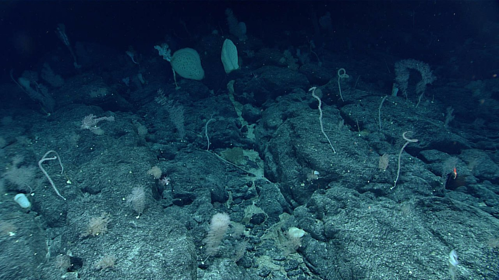

01 / Current-fed outcrop
Coral terraces
Branching fans rise above rough stone. Small animals occupy branches, ledges and crevices; bare rock remains visible between colonies.
Reference: Papahānaumokuākea expedition coral-and-sponge community; exact image depth not verified.
Explore the habitat recipe
Terrain to build
Layered hard outcrops with sheltered pockets and exposed crests.
Movement and atmosphere
Flexible branches respond gently to current; drifting food particles show flow direction.
Arrival
A few isolated fans appear first. Around a ridge, the silhouettes become a layered garden.
Exploration scenario
Follow the current to document animals sheltering on a coral colony.
Research direction · proposed gameplay
Study suspension feeding and cooperative habitat structure; proposed village filtration research.
Generator constraints
- Require hard substrate and sufficient food/current.
- Cluster colonies; vary height, spacing and orientation.
- Exclude the hot center of active vents.
Variations within this habitat
Fan-dominated ledge / Boulder coral garden / Sparse crest becoming a dense terrace
Representative habitat, not a measured reconstruction.